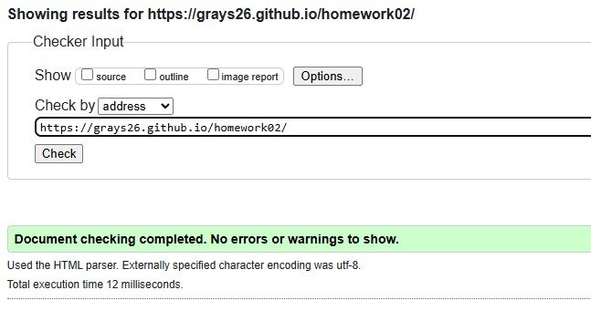

Мій шлях
Мене звуть Сергій, я з міста Миколаїв, мені здається вже 28 років, і версткою веб інтересів я займаюся три роки. Сюди прийшов щоб нарешті мати право говорити: я займаюся якісною версткою веб інтересів понад три роки (:
Знакова цифра три. Бо до 2022 року я займався зовсім іншим. А саме мореходством. Профільна спеціальність - капітан несамоходного судна. Стаж роботи 5 років. Дипломований спеціаліст на посаді судоводій на морських та внутрішньо водних морських шляхах...
Це було в іншому житті
Початок нової історії
Після 2022 року над домом почали літати ракети. Як раз у лютому я мав відправлятися у свій черговий рейс, але не сталося. Чомусь цього не сталося.. може життя саме туди повернуло мою стежку в іншому направлені. Дивитися в вікно та чекати смерті було занадто сумно, тому через деякій час після відбиття загарбників з міста (дякуючи оборонцям) я вирішив зайнятися чимось іншим, тим, що не потребує виходу з дому..)
Тоді я і побачив канал Фрілансер по життю, та багато інших, але зупинився тут. Безкоштовний курс Євгенія та патронес допомогли мені зануритися в верстку та почати працювати. Вже через рік я отримав постійного замовника, далі розвивався, українські біржі, апворк. На другий рік я почав працювати на компанію. Час йшов, я розвивався і зрозумів, що досягнув стелі свого саморозвитку, але грошова винагорода мене не влаштовувала. Вона мала бути більше. Тому, було прийнято рішення записатися на курс. Тут я хочу вдосконалити свої вміння, перейняти досвід та нарешті досягнути кращого життя для себе та свої рідних.
Дякую за увагу. Усім гарного настрою, почуємось (:
Звітність
Оскільки самопрезентація підійшла до кінця, саме час перевірити свою роботу. Хто краще тебе знайде помилки у твої роботі. Отже поїхали:
- Оцінка роботи за валідатором
- 
- Кількість вивчених тегів: 18
- Кількість тегів без конкретного призначення: 0